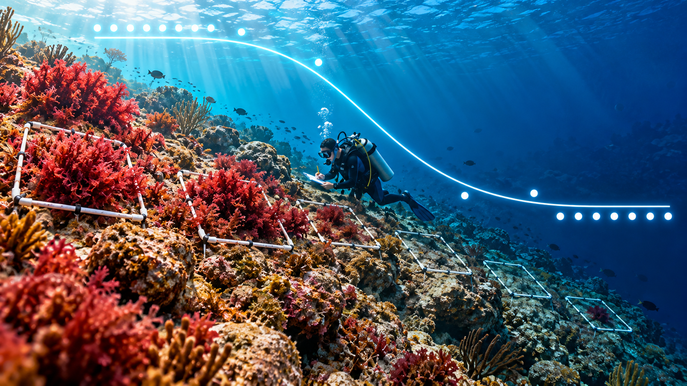
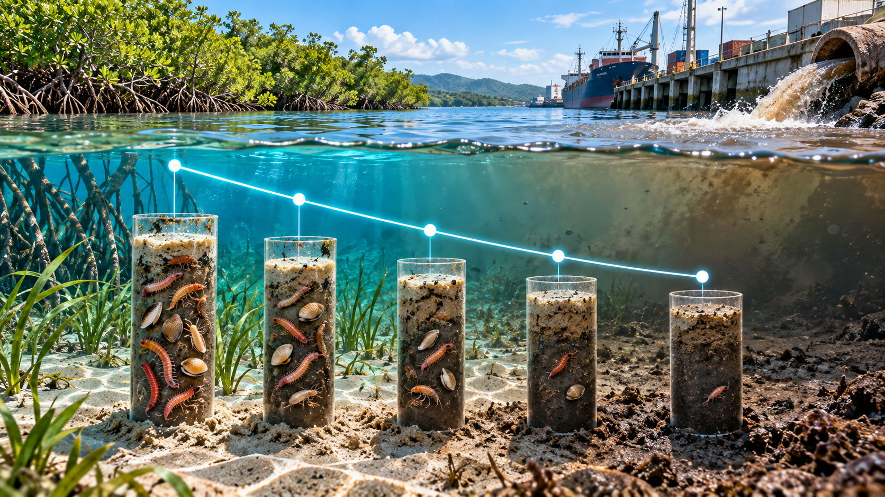

NotaCómo usar este cuestionario
Autoevaluación (RA1, RA2) para después del Taller · GLM Binomial y Poisson en R y del cuestionario de opción múltiple. Los escenarios no son los mismos del taller: usan otros datos, para razonar el resultado en lugar de recordarlo. La retroalimentación completa está al final.
Bloque A — Conceptos
A1. ¿Por qué no basta con ajustar lm() a una variable de presencia/ausencia (0/1)? Mencionar un problema concreto de las predicciones.
A2. En un GLM, ¿sobre qué actúa la función de enlace: sobre cada observación de Y (como una transformación clásica) o sobre otra cosa? Explicar la diferencia y una ventaja práctica cuando hay ceros.
A3. Un colega reporta un GLM binomial con β = 0.10 y afirma que “el efecto es pequeño”. ¿Qué falta antes de que esa afirmación tenga sentido?
A4. ¿Qué mide φ (phi) en un GLM Poisson, cómo se calcula y qué decisión se tomaría si φ = 3.5?
A5. Un GLM binomial arroja p = 0.003 para el predictor, pero la devianza solo se reduce un 8 %. ¿Es contradictorio? Explicar.
Bloque B — Ocupación de macroalgas Rhodophyta y profundidad

Una estudiante registra la presencia/ausencia de un banco de Rhodophyta en 50 cuadrantes a distinta profundidad y ajusta un GLM binomial:
| Coeficiente | Estimado | OR = exp(β) | IC 95 % (OR) | Valor p |
|---|---|---|---|---|
| Intercepto | 1.645 | — | — | 0.009 |
| Profundidad (m) | −0.154 | 0.857 | [0.760, 0.952] | 0.007 |
n = 50 cuadrantes, 27 ocupados.
B1. Escribir la ecuación logit del modelo e interpretar el signo del coeficiente de profundidad en términos biológicos (pista: disponibilidad de luz).
B2. El IC del OR es [0.760, 0.952] y no incluye 1. ¿Qué indica sobre la relación entre profundidad y ocupación?
B3. Calcular la probabilidad de ocupación predicha a 5 m y a 15 m de profundidad (con la ecuación logit y plogis(), o a mano).
B4. Si OR = 0.857 significa que “por cada metro adicional, los odds de ocupación se multiplican por 0.857”, ¿por qué NO es correcto afirmar que “la ocupación baja un 14.3 % por metro”? (pista: diferencia entre odds y probabilidad).
Bloque C — Abundancia bentónica y perturbación antrópica

Un estudiante cuenta organismos bentónicos por núcleo de sedimento en 34 estaciones con distinto nivel de perturbación antrópica (índice 0–10) y ajusta un GLM Poisson:
| Coeficiente | Estimado | Razón de tasas | Valor p |
|---|---|---|---|
| Intercepto | 2.146 | — | < 0.001 |
| Perturbación | −0.056 | 0.946 | 0.013 |
n = 34, φ = 1.56, AIC = 176.0
C1. Interpretar la razón de tasas (0.946) en una frase, en el contexto de perturbación antrópica y comunidades bentónicas.
C2. φ = 1.56 está dentro de la zona de alerta vista en clase (φ ≈ 1: equidispersión; φ > 1.2–2: sobredispersión), aunque lejos del ejemplo del arrecife en el taller (φ = 2.22). ¿Se mantendría el Poisson o se corregiría? Justificar.
C3. Si se ajustara MASS::glm.nb() en lugar de glm(family = poisson), ¿se esperaría que el coeficiente de perturbación cambie mucho? ¿Qué sí se esperaría que cambie?
Bloque D — ¿Qué familia se usa?
Para cada situación, indicar familia GLM, función de enlace y cualquier detalle adicional del modelo:
D1. Proporción de cobertura de coral vivo por cuadrante, medida como puntos con coral / total de puntos muestreados.
D2. Número de nidos de tortuga marina por temporada en segmentos de playa de longitud distinta.
D3. Presencia/ausencia de manatí antillano en estaciones de monitoreo de un río.
D4. Longitud total (cm) de individuos de jurel capturados en un muestreo pesquero.
Bloque E — Proyecto de grado
E1. Describir en una frase una variable respuesta del propio proyecto de grado que requeriría un GLM (y no lm()). Indicar familia y enlace.
E2. Si esa variable es un conteo, ¿qué proceso biológico del sistema podría generar sobredispersión (agregación, parches, exceso de ceros)? ¿El esfuerzo de muestreo es igual entre unidades o requeriría offset?
Retroalimentación
TipVer respuestas y justificación
A1. Una recta puede predecir valores fuera de [0, 1]: probabilidades negativas o mayores que 1, que no tienen sentido para una variable binaria. Además, los residuos de datos 0/1 no son normales y su varianza, p(1 − p), depende de la media.
A2. Actúa sobre μ = E(Y), el valor esperado, no sobre cada observación. Por eso la varianza se modela en su escala real. Ventaja práctica: un conteo de 0 no genera problema, mientras que log(Y) de un 0 es −∞ y obliga a recursos como log(Y + 1).
A3. Falta la escala: β = 0.10 está en escala logit. Hay que exponenciarlo (OR = exp(0.10) ≈ 1.105, +10.5 % en los odds por unidad de X) y considerar el rango de X: a lo largo de 20 unidades, el OR acumulado sería exp(2) ≈ 7.4, un efecto grande.
A4. φ compara la variabilidad observada con la esperada bajo Poisson. Se calcula como la suma de los residuos de Pearson al cuadrado dividida por los g.l. residuales (la razón devianza residual / g.l. es una aproximación). Con φ = 3.5 hay sobredispersión fuerte: los errores estándar del Poisson están subestimados. Conviene ajustar MASS::glm.nb() (o cuasi-Poisson) y revisar posibles causas biológicas (agregación, covariables omitidas, exceso de ceros).
A5. No es contradictorio. El valor p indica que el efecto es distinguible del azar; la reducción de devianza indica cuánto de la variación explica el predictor. Un efecto puede ser real y a la vez explicar poco, porque otros factores no incluidos pesan más. Es el mismo razonamiento que r² frente al valor p en regresión lineal.
B1. logit(p) = 1.645 − 0.154 × profundidad. El signo negativo indica que a mayor profundidad disminuye la probabilidad de ocupación, consistente con la menor disponibilidad de luz para la fotosíntesis.
B2. Como el IC no incluye 1, hay evidencia estadística de que la profundidad reduce la probabilidad de ocupación. Al ser un estudio observacional, se concluye asociación y no causalidad (la profundidad covaría con luz, temperatura y sustrato).
B3. A 5 m: logit = 1.645 − 0.154 × 5 = 0.875 → p = plogis(0.875) ≈ 0.71. A 15 m: logit = 1.645 − 0.154 × 15 = −0.665 → p = plogis(−0.665) ≈ 0.34.
B4. El OR describe un cambio multiplicativo en los odds [p/(1 − p)], no en la probabilidad. La relación entre odds y probabilidad no es lineal, así que “los odds bajan 14.3 %” no se traduce en “la probabilidad baja 14.3 %”. En B3, la probabilidad cae de 71 % a 34 % entre 5 y 15 m, y la magnitud del cambio por metro depende del tramo de la curva.
C1. Por cada unidad adicional del índice de perturbación, la abundancia esperada de organismos bentónicos se multiplica por 0.946, es decir, disminuye un 5.4 %. Es consistente con la degradación del hábitat bentónico por presión humana.
C2. Lo más prudente es corregir o, al menos, reportar ambos modelos. Con estos datos, la binomial negativa da el mismo coeficiente (−0.056), un error estándar mayor (0.027 frente a 0.023) y p = 0.037 en lugar de 0.013. El AIC apenas cambia (175.3 frente a 176.0; ΔAIC < 2, modelos prácticamente equivalentes). La conclusión se mantiene, pero con una evidencia menos exagerada. Dejarlo como Poisson solo se justificaría en un análisis exploratorio.
C3. El coeficiente cambiaría poco: la binomial negativa suele dar una estimación puntual similar a la del Poisson. Lo que sí cambia es el error estándar, que crece porque ya no se asume Var = μ. En consecuencia, el valor p aumenta y el IC se ensancha.
D1. Binomial con enlace logit, usando cbind(puntos_coral, puntos_sin_coral) como respuesta, no el porcentaje. Como los puntos de un mismo cuadrante no son independientes, es frecuente encontrar sobredispersión: en ese caso, family = quasibinomial.
D2. Poisson (o binomial negativa si hay sobredispersión) con enlace log. Como los segmentos tienen longitudes distintas, se incluye offset(log(longitud_km)) para modelar nidos por km.
D3. Binomial con enlace logit (presencia/ausencia).
D4. Gaussiana con enlace identidad: una variable continua y aproximadamente normal se analiza con lm() (equivalente a glm(family = gaussian)).
E1 y E2. No hay respuesta única: contrastar el razonamiento con el profesor o los compañeros.
Referencias
Quinn, G. P., & Keough, M. J. (2024). Experimental Design and Data Analysis for Biologists (2nd ed.). Cambridge University Press. enlace_ejercicios
Logan, M. (2011). Biostatistical Design and Analysis Using R. Wiley-Blackwell. enlace_ejercicios; enlace_libro
Nota
Los escenarios de este cuestionario son de elaboración propia; sus cifras se reproducen con datos simulados en R (script de respaldo del docente) y no reproducen ejercicios de las fuentes citadas.